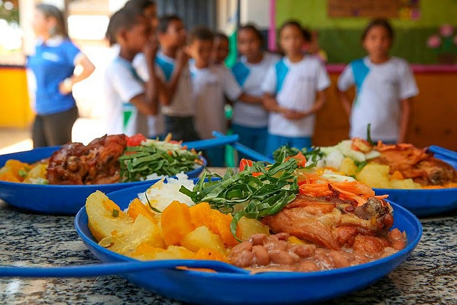

Programa Nacional de Alimentação Escolar (PNAE) - Brasil
O Programa Nacional de Alimentação Escolar (PNAE) é um programa governamental brasileiro que tem como objetivo garantir o direito à alimentação adequada e saudável aos estudantes da rede pública de ensino. Uma das vertentes do PNAE é promover a alimentação sustentável através da compra de alimentos provenientes da agricultura familiar, orgânicos e agroecológicos. No Brasil, o PNAE estabelece que no mínimo 30% dos recursos financeiros repassados pelo governo federal devem ser utilizados na compra de alimentos da agricultura familiar. Isso não apenas estimula a produção local e o desenvolvimento econômico das comunidades rurais, mas também promove uma alimentação mais saudável e sustentável nas escolas. Além disso, o programa incentiva práticas agrícolas mais sustentáveis, como o uso de técnicas agroecológicas que respeitam o meio ambiente, evitam o uso excessivo de agrotóxicos e preservam a biodiversidade. O PNAE é um exemplo concreto de como as políticas governamentais podem promover a alimentação sustentável, contribuindo para a saúde das crianças, o desenvolvimento local e a preservação do meio ambiente. Este guia destaca como o compromisso nacional com a alimentação sustentável é fundamental para o bem-estar da população e para a preservação do nosso planeta.
Governo Federal investe em ações de alimentação saudável e nutrição
Os recursos são para estados e municípios aplicarem em medidas para promover a alimentação adequada e saudável, além da prevenção da desnutrição e anemia
Governo Federal está liberando R$ 23,5 milhões para serem investidos neste ano em ações de alimentação saudável e nutrição da população brasileira. Os recursos são do Ministério da Saúde e vão ser liberados para estados e municípios aplicarem, prioritariamente, em medidas para promover a alimentação adequada e saudável, prevenção de sobrepeso e obesidade, principalmente para o público infantil, além da prevenção da desnutrição e da anemia. “O critério para repasse desse recurso tem a ver com o porte populacional e os valores variam de acordo com esse porte, e também tem a ver com o cumprimento de um determinado desempenho pelos municípios. Desde 2021, a Cgan (Coordenação-Geral de Alimentação e Nutrição/MS) monitora dois indicadores: o aumento do número de indivíduos com o estado nutricional registrado e o aumento do número de indivíduos com marcadores de consumo alimentar registrado”, explica a analista técnica de Políticas Sociais do Ministério da Saúde, Paloma Marinho. Para os estados são R$ 3,31 milhões. Aqueles que têm menos de 2,5 milhões de habitantes (RR, AP, AC, TO, RO, SE), vão receber R$ 90 mil cada. Os que possuem de 2,5 a 4 milhões de habitantes (MS, DF, PI, MT, AL, RN) vão receber R$ 110 mil. Para aqueles que têm população entre 4 a 9 milhões de pessoas (AM, GO, MA, SC, PA, ES, PB), serão R$ 130 mil. Já os que têm mais de 9 milhões de habitantes (CE, PE, PR, RS, BA, RJ, MG, SP), vão contar, cada um, com R$ 150 mil para serem investidos em políticas públicas de alimentação saudável e nutrição. No caso dos municípios, serão mais de R$ 20 milhões que serão distribuídos para aqueles com mais de 30 mil habitantes. O repasse é feito pelo Governo Federal com base na Política Nacional de Alimentação e Nutrição (Pnan). Os recursos vão para o Fundo Estadual ou Municipal de Saúde, em parcela única anual. O investimento, os municípios contemplados e os respectivos valores foram detalhados em uma portaria do Ministério da Saúde publicada no dia 25 de fevereiro.